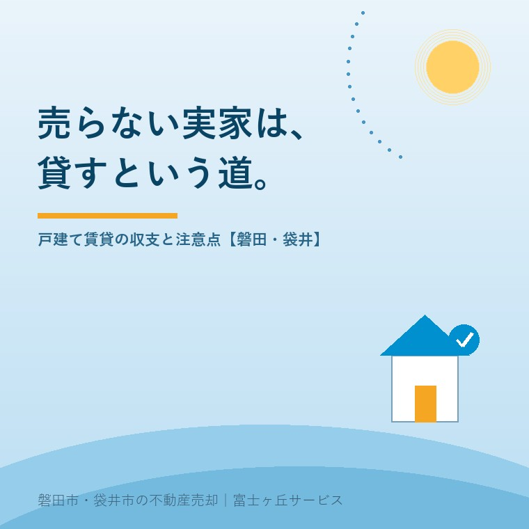

2026年7月30日｜カテゴリ：空き家活用・賃貸・実家じまい

この記事の要点
Q. 思い出のある実家、売りたくはない。空き家のままにしないで貸すことはできる？
A. できます。賃貸市場でファミリー向けの戸建ては供給が少なく、状態と家賃設定しだいで借り手が見つかる余地は十分あります。ただし、貸す前のリフォーム費用、貸したあとの修繕義務、そして「普通借家で貸すと簡単には返してもらえない」という法律のルールを知ってから決めることが大切です。磐田市・袋井市では、介護施設の運営から不動産事業を始めた富士ヶ丘サービスのような地域密着の会社に、「貸す・売る・持つ」を並べて相談するという選択肢があります。
実家じまいのご相談で、「売る」と決め切れないご家族は少なくありません。親が施設から戻る可能性が少しでもあるうちは売れない、思い出があって手放したくない、税金の特例のタイミングを待ちたい──理由はさまざまです。そんなとき、空き家のまま維持費を払い続けるのでも、急いで売るのでもない第3の道が「貸す」です。今日は、戸建て賃貸の現実的な収支の考え方と、貸す前に必ず知っておくべき注意点を、不動産屋の目線で解説します。
賃貸市場の主役はアパート・マンションで、戸建ての貸家はもともと数が多くありません。一方で、「子どもをのびのび育てたい」「駐車場が2台ほしい」「庭で家庭菜園を」というファミリー層の戸建て志向は根強く、とくに車社会の磐田市・袋井市では、駐車スペースの広い戸建て貸家は問い合わせが入りやすい物件です。ペット可にできるのも戸建てならではの強みです。
つまり、「古いから借り手なんていない」と決めつけるのは早い、ということ。ただし成り立つかどうかは、次の収支と法律の話を踏まえてからです。
貸す判断は、家賃の額面ではなく、費用を引いた手残りで考えます。
| 項目 | 内容 |
|---|---|
| 入口の投資 | 入居可能にするためのリフォーム・修繕（水回り・給湯器・畳・クロス等）と残置物の撤去。建物の状態次第で数十万〜数百万円 |
| 毎年の支出 | 固定資産税、火災保険（貸家用）、管理委託料、退去時の原状回復・設備故障の修繕費（貸主負担が原則） |
| 収入 | 家賃×入居期間。空室の間はゼロ。家賃は「近隣で借りられる住まいとの比較」で決まり、思い出の分は上乗せできない |
| 税金 | 家賃収入は不動産所得として確定申告が必要 |
目安として、入口の投資額を「何年分の家賃で回収できるか」を必ず計算してください。回収に10年かかる大規模リフォームは、築年数によっては合理的でないこともあります。逆に、状態が良く小さな手入れで貸せる家なら、空き家の維持費（保険・税金・草刈り）を払い続けるより、ずっと健全です。家に人の出入りがあること自体が、建物の傷み・防犯・近隣関係の面で最大の空き家対策になります。
貸す前に必ず知っておくべきなのが、借地借家法のルールです。一般的な賃貸借契約（普通借家契約）では、借主の住まいが強く保護されており、契約期間が満了しても、貸主の側から更新を断るには「正当事由」が必要です。「そろそろ売りたいから」「子どもが住むことにしたから」だけでは正当事由と認められにくく、立退料の話になることもあります。つまり、普通借家で貸した家は、貸主の都合だけでは戻ってきません。入居者がいる状態での売却（オーナーチェンジ）も可能ですが、買い手は投資家層に限られ、価格は下がりがちです。
そこで検討したいのが定期借家契約です。あらかじめ定めた期間の満了で契約が確定的に終了し、更新はありません（双方が望めば再契約は可能）。「3年後に売るか住むか決めたい」「それまでの間だけ貸したい」という実家との相性がよい制度です。家賃は普通借家よりやや低めになる傾向がありますが、「家がちゃんと戻ってくる」ことの価値は、実家の場合とても大きい。当社が実家の賃貸化をお手伝いする際も、将来の選択肢を残す設計を基本にしています。
| 向いているケース | 選択肢 |
|---|---|
| 誰も住む予定がなく、維持の負担が重い | 売却（税の特例の期限にも注意） |
| 数年内に売る・住む可能性を残したい／状態が良く小投資で貸せる | 定期借家で貸す |
| 長期の家賃収入を柱にしたい／大規模リフォームも回収できる立地 | 普通借家で貸す（賃貸経営として本腰を入れる） |
| 戻る可能性が高い・数か月内に方針が決まる | 持つ（ただし管理と保険は必須） |
注意点をもう1つ。相続前の実家（親名義の家）を貸すには名義人本人の契約が必要で、認知症が進むと貸すことも売ることもできなくなります（資産凍結の記事参照）。「貸す」を選ぶにも、名義と意思確認が元気なうちであることが前提です。
富士ヶ丘サービスは、磐田市・袋井市に特化した地域密着の会社として、「高く売る」だけでなく「売らない実家の生かし方」もご提案しています。この家は貸せるのか、いくらで、どんな契約で──まずは現状の確認からご一緒します。実家じまい相談室もあわせてご利用ください。
ふじがおか実家カルテ｜「貸せる家か」の確認にも
貸す・売る・持つ。3つの道を、まず1冊で比べる。
登記情報と固定資産税通知書から、名義・建物の状態・立地を宅建士が机上で確認し、賃貸に出す場合の考え方と売却の見通しをあわせて整理してお渡しします。
本記事は2026年7月30日時点の情報をもとに作成しています。賃貸借契約の方式・正当事由の判断は事案により異なります。個別の契約は宅地建物取引業者・弁護士に、家賃収入の確定申告は税理士・税務署にご確認ください。
磐田市・袋井市の実家じまい・相続空き家相談
固定資産税通知書だけでも相談できます
住所があいまいでも、通知書や写真から名義・道路・農地・残置物の確認順を整理します。カルテ申込またはLINEで状況を送ってください。
富士ヶ丘サービス株式会社／静岡県磐田市見付5789番地1／TEL:0538-31-3308／静岡県知事 (2) 第14083号／代表取締役・宅地建物取引士 大石 浩之